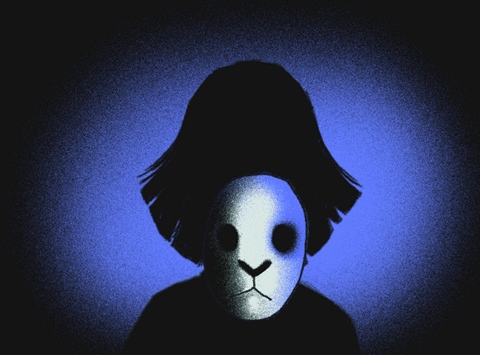
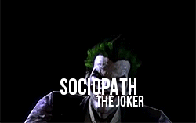
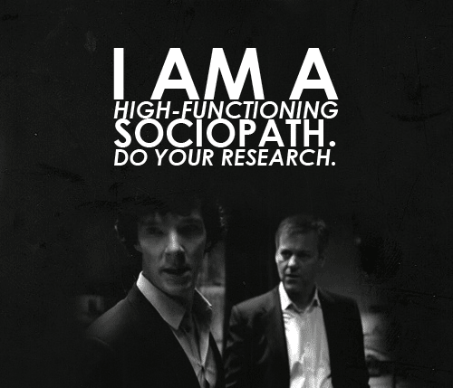
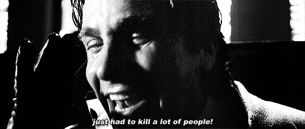
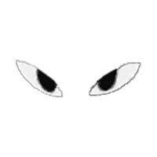

SOCIOPATH
소시오(socio)는 사회적(social) 혹은 사회(society)라는 뜻을 담고 있고 패스(path)는 병적인 고통이나 증상이라는 의미
Hot-Headed Sociopath
Click Here

즉 마음에 가면을 쓰는 게 가능하기 때문일 것이다.




Click here to hear about sociopath's stories.